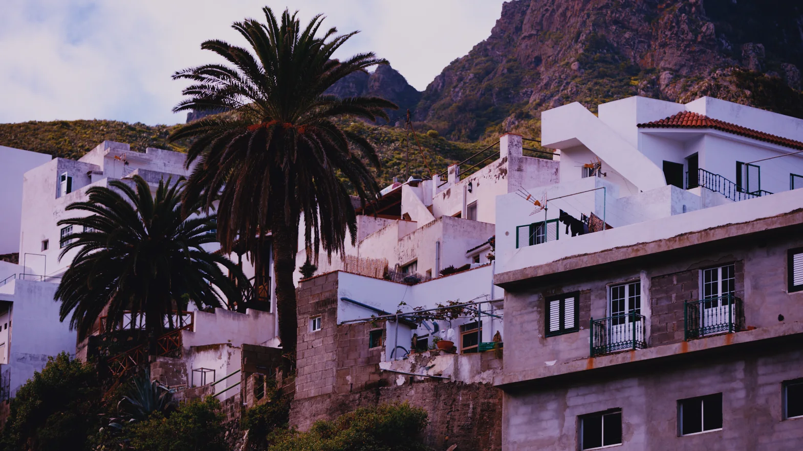
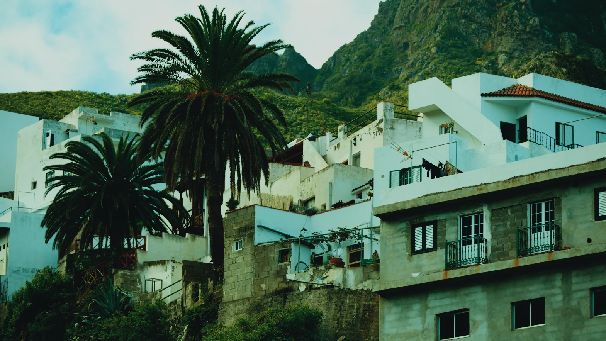
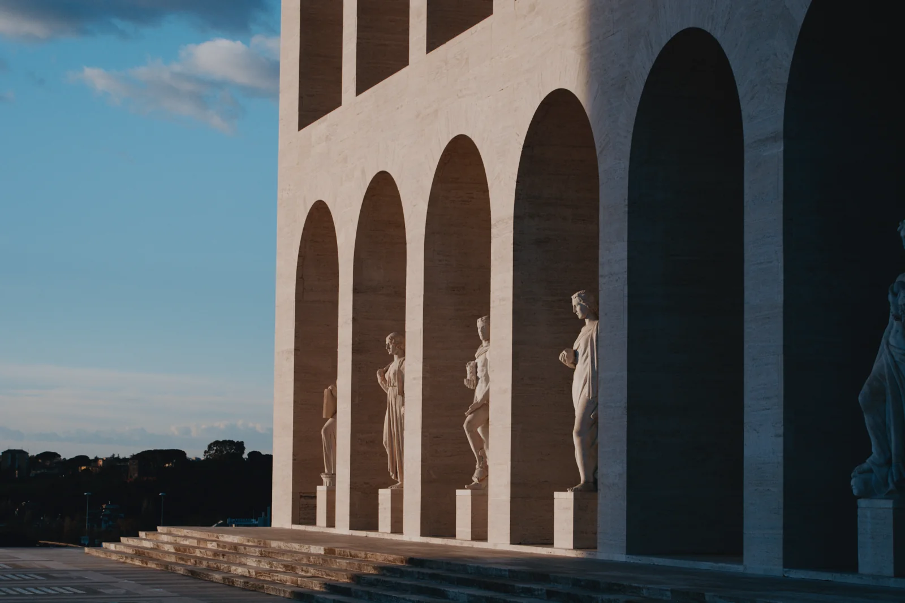
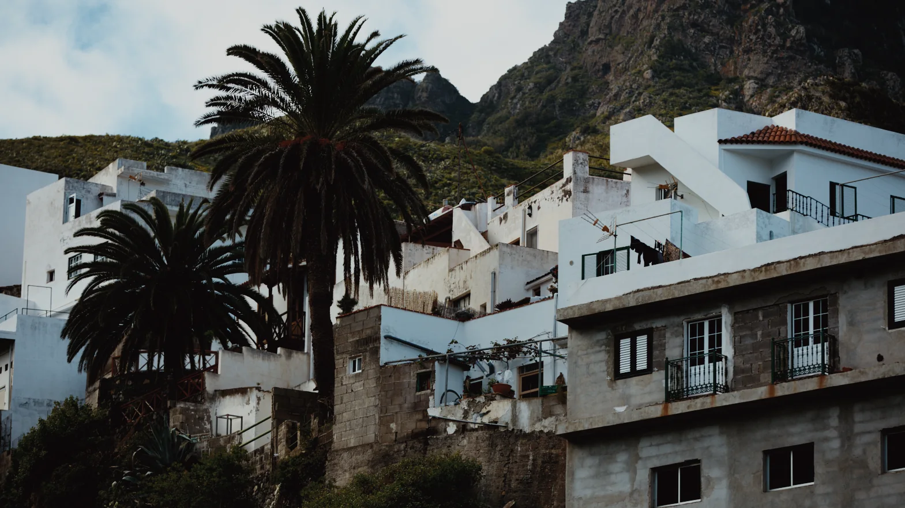

Colour
The colour of the print comes from the film–paper pairing. This chapter describes the tools you use to correct it or to change it deliberately: enlarger filtration, DIR couplers, spectral reconstruction, material bases, bleaching and emulsion aging.
Enlarger filtration
An enlarger's colour head has cyan, magenta and yellow filters. The panel starts from a “neutral” filtration, chosen so that an 18% grey comes out grey for the given film–paper pairing. The sliders shift the filtration from that point.

Magenta −20 CCA more purple print. 
Magenta +20 CCA greener print. Yellow −20 CCA warmer, yellow print. Yellow +20 CCA cooler, blue print. Cyan 30 CCA red, warm print. NeutralAll shifts at 0.


Magenta filter shift
Enlarger and print
- Range
- −60 to 60 CC
- Default
- 0
- Step
- 1 CC
The green–purple axis. More magenta gives a greener print.
Typical values
Correcting a cast: 2–10 CC. 20 CC is already a strong effect.
Yellow filter shift
Enlarger and print
- Range
- −60 to 60 CC
- Default
- 0
- Step
- 1 CC
The warm–cool axis. More yellow gives a bluer print, less yellow a warmer one.
Typical values
Warming: −5 to −10 CC. Cooling: +5 to +10 CC. This is the equivalent of white balance, but done “on the paper”, so it acts a little differently in the highlights and the shadows.
Cyan filtration
Enlarger and print
- Range
- 0–120 CC
- Default
- 0
Adds a cyan filter, which reduces the red exposure. The print becomes redder and warmer, and green weakens. In the darkroom the cyan filter is rarely used, because most corrections are made with yellow and magenta.
Typical values
Up to 5–10 CC for a warm, “sunset” tone. 30 CC is a very strong effect.
DIR couplers
During development DIR couplers release an inhibitor that slows development in the same layer and in the neighbouring layers. They give cleaner colours, better colour separation and local contrast. Each film has its own values in its profile.

Amount 0No couplers: much less saturated. Amount 1The film profile. Amount 1.2More saturated. Amount 1.6Much more saturated; the panel warns.


DIR coupler amount
Spectral reconstruction and DIR
- Range
- 0–2
- Default
- 1
The overall strength of the couplers. Below 1 the colours are calmer, above 1 stronger.
Typical values
0.8–1.2. With slides and scenes with a lot of green, try lower values.
Pitfalls
When the effective strength, Amount × (0.4 × Same-layer + 0.6 × Interlayer), exceeds 1.5, the model starts to reverse tones: darker areas print lighter. This happens with 15 of the 26 films in the 1.6–2.0 range. The panel then shows a warning below the sliders, but it does not block the value.
Same-layer inhibition
Spectral reconstruction and DIR
- Range
- 0–2
- Default
- 1
Inhibition within the same layer. It mainly affects contrast and edge sharpness within each colour.
Interlayer inhibition
Spectral reconstruction and DIR
- Range
- 0–2
- Default
- 1
Inhibition between layers. It mainly affects saturation and colour separation. It carries more weight in the DIR warning than Same-layer.
Coupler diffusion
Spektrafilm optics › Coupler diffusion
- Diffusion width (µm)
- 0–100, default 0
- Tail width (µm)
- 0–1000, default 200
- Tail weight
- 0–1, default 0.06
The spatial reach of the couplers. A width above zero gives an edge effect: local contrast and an impression of sharpness, as in real film. The tail adds a weak, wide effect over a long distance.
When to use
New looks have zero; the chemical DIR effect itself still works. The original Spektrafilm gives 5–20 µm as the typical range. A width of 30 µm raises contrast a little.
Pitfalls
At a width of 0 the tail sliders are inactive. The reach scales with Film format (chapter 8).
Override stock coupler channels
Spektrafilm optics › Coupler diffusion
- Default
- off
Replaces the coupler values from the film profile with nine sliders: Same-layer gamma R, G, B and the couplings between layers: R → G coupling, R → B coupling, G → R coupling, G → B coupling, B → R coupling, B → G coupling (0–1). The sliders' default values are generic, not the values of the chosen film.
When to use
Only for colour experiments. The couplings work like a 3×3 colour matrix: for example, a higher G → R strengthens the separation of green from red.
Pitfalls
Once you turn it on, you lose the DIR character of the chosen film, and changing the film no longer changes the couplers.
Spectral reconstruction
Spectral reconstruction
Spectral reconstruction and DIR
- Options
- Hanatos 2025, Hanatos 2026, Mallett 2019
- Default
- Hanatos 2025
The image from C1 has three RGB channels, but film responds to the whole spectrum of light. The reconstruction method rebuilds from RGB a smooth spectrum that “falls” on the film.
Hanatos 2025The full range of visible colours. Hanatos 2026Slightly warmer. Mallett 2019sRGB gamut only.


When to use
Hanatos 2025 for everyday work. The methods differ mainly in very saturated colours (violets, neon, flowers, LED lights). In scenes without such colours the differences are minimal.
Pitfalls
Mallett 2019 clips colours outside sRGB, so do not combine it with a wide ProPhoto input if the scene has very saturated colours.
Colour adaptation
Color adaptation
Spektrafilm optics › Color adaptation
- New look
- on, with four detailed options
A newer colour path, marked as experimental in the OFX version. It compresses colours gently instead of clipping them. It consists of four options:
- Input spectral gamut compression: pulls colours outside the visible range inside it before spectral reconstruction.
- Density curve smoothing: smoother interpolation of the density curves.
- Output lightness compression: a soft lightness knee at the output.
- Output chroma compression: soft saturation compression at the output.
When you turn it off, saturation rises a little and the image becomes slightly cooler. Saturated colours may then clip.
When to use
Leave it on. Turn it off only when you compare with a look from before adaptation was introduced.
UV and IR filters
UV cutoff, IR cutoff
Film development
- UV cutoff
- 380–450 nm, default 380 (no filter)
- IR cutoff
- 600–780 nm, default 780 (no filter)
Filters in front of the lens that cut off short or long wavelengths. They change how the film sees violets and deep reds.


Bleaching and silver
Negative bleach bypass
Film development
- Range
- 0–100%
- Default
- 0
Skips bleaching of the negative: metallic silver stays in the film next to the dyes. The print has lower saturation and a more “silvery”, raw character. At 50% it lowers saturation and brightens the print slightly.
Negative leuco cyan
Film development
- Range
- 0–2
- Default
- 1
The loss of cyan dye in a skipped bleach (1 = the physical value). It works only together with Negative bleach bypass. Without it, it does not change the image.
Print bleach bypass
Enlarger and print
- Range
- 0–100%
- Default
- 0
Silver stays in the print. The print is darker and less saturated, with a deeper black. This is the classic “bleach bypass” known from cinema: a hard, desaturated image with dense black.
Negative 50% 
Print 50%Darker.


Material bases
The base is the density of the unexposed, developed material: the orange mask of the negative and the tint of the paper. The print is calibrated to the base, so changing it shifts the whole colour balance.
Film base 0No mask: a strong red cast. Film base 1The profile. Film base 2A turquoise cast, darker. Paper base 2A darker, dingy white.


Film base
Film base
- Enable base tuning
- on by default
- Base density scale
- 0–5, default 1
- Spectral tilt
- −2 to 2, default 0
- cyan base, magenta base, yellow base
- 0–5, default 1
The scale of the negative's mask, its spectral tilt around 555 nm, and multipliers for each dye.
When to use
Rarely. Small changes to the components (0.9–1.1) give subtle colour shifts in the shadows and highlights. Large values give strong casts that you have to balance with filtration.
Pitfalls
A value of 0 or 2 is already an extreme effect. After any larger change, correct the enlarger filtration.
Print base
Print base, Print Simulation only
- Enable base tuning
- on by default
- Base density scale
- 0–5, default 1
- cyan base, magenta base, yellow base
- 0–5, default 1
The density and tint of the paper white. Higher values give a darker, “old” white. Useful in the look of a period print (recipe).
Emulsion aging
A model of expired or badly stored film. It is a creative model: it relies on approximations, not on measurements of a specific roll. The effects build up more and more slowly: after about 12 “effective” years they reach about 2/3 of the full effect, and after about 36 years almost all of it.
Fresh film 10 yearsLess saturated, lifted black, cooler. 10 years, hot and humidMuch less saturated, the black lifted further. 40 yearsMuch less saturated, a grey black: flat and bluish.


Emulsion aging
Emulsion aging
- Enable emulsion aging
- off by default
- Age (years)
- 0–100
- Storage
- Room temperature, Refrigerated, Frozen, Hot and humid
Age and storage conditions. Freezing slows aging about 20 times, a refrigerator about 3 times, and heat and humidity speed it up 2.5 times. Aging adds fog (strongest in the blue layer), lowers contrast and maximum density, increases grain and lowers speed.
The detailed sliders add to the model: Gamma scale, Dye density scale, Grain gain, Speed loss (EV), and separately for each channel: R fog density, R gamma scale, G fog density, G gamma scale, B fog density, B gamma scale (fog 0–1, default 0; gamma 0.05–2, default 1).
When to use
For the look of a found, expired roll: 5–15 years at room temperature is a moderate effect. You can balance the cool cast of aging with Yellow filter shift −5 to −10.
Pitfalls
Grain gain changes the grain of the Preview, Production and RMS models. Grain synthesis has its own radius sliders.